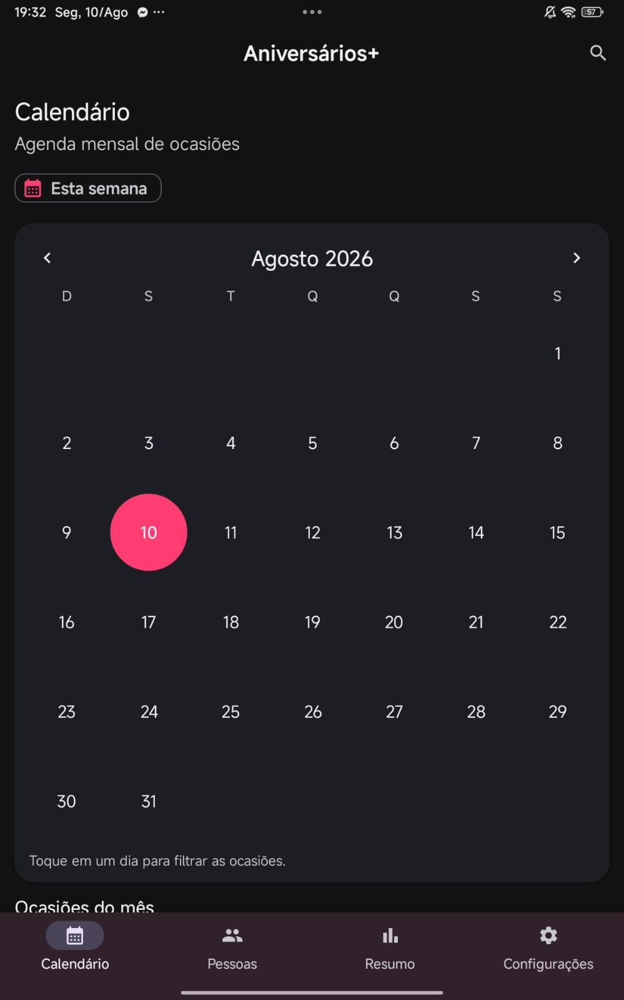
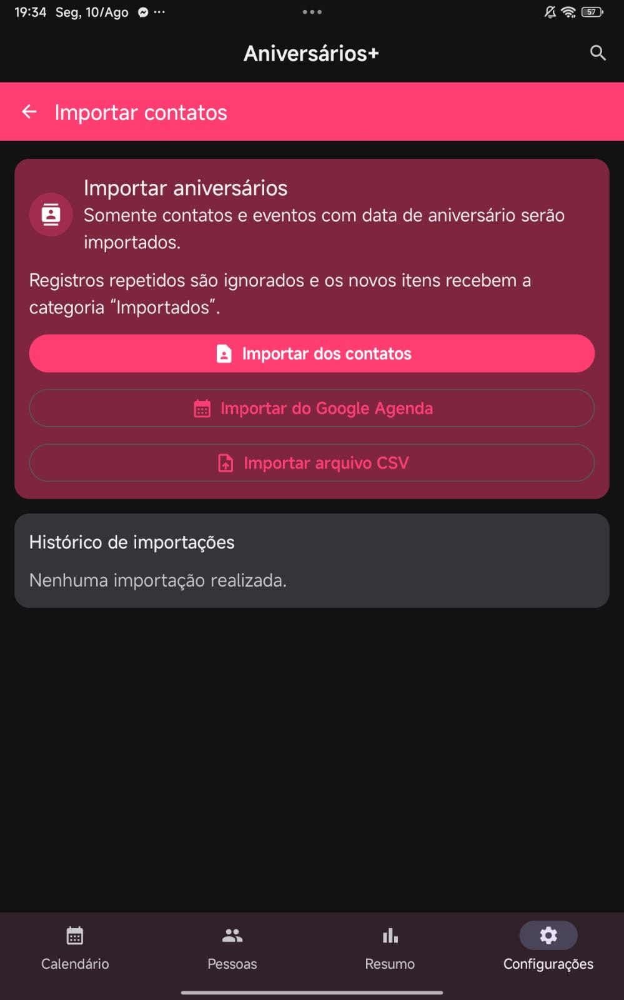
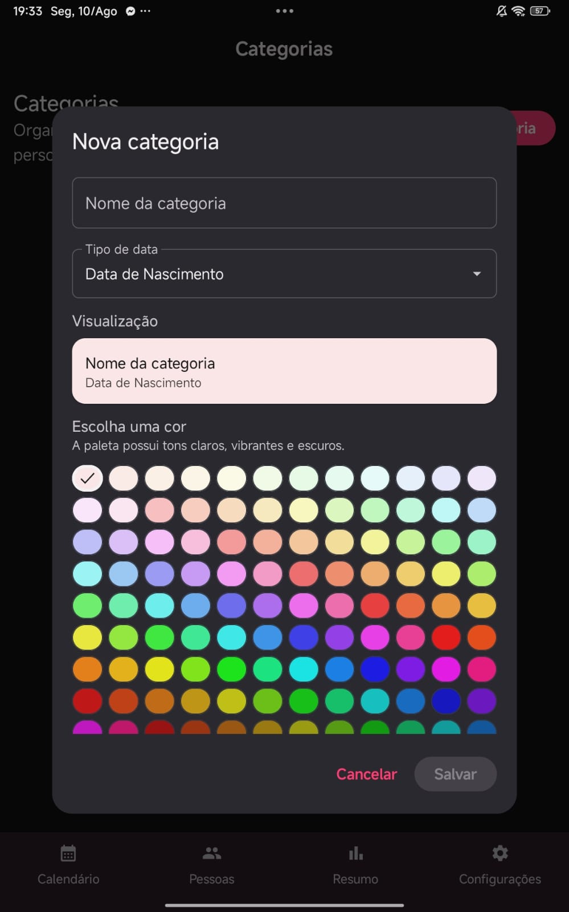
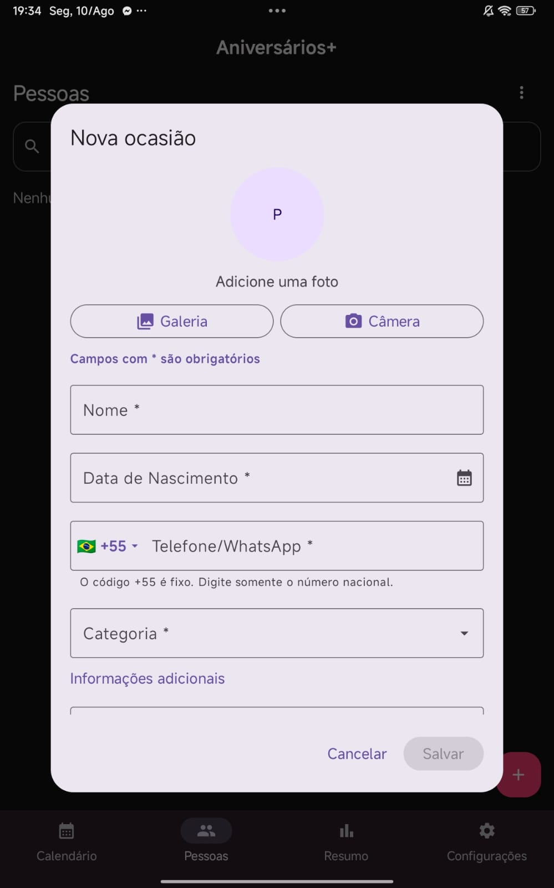
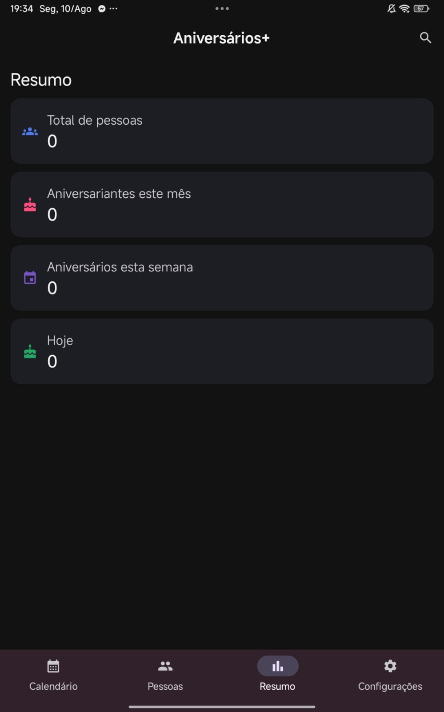
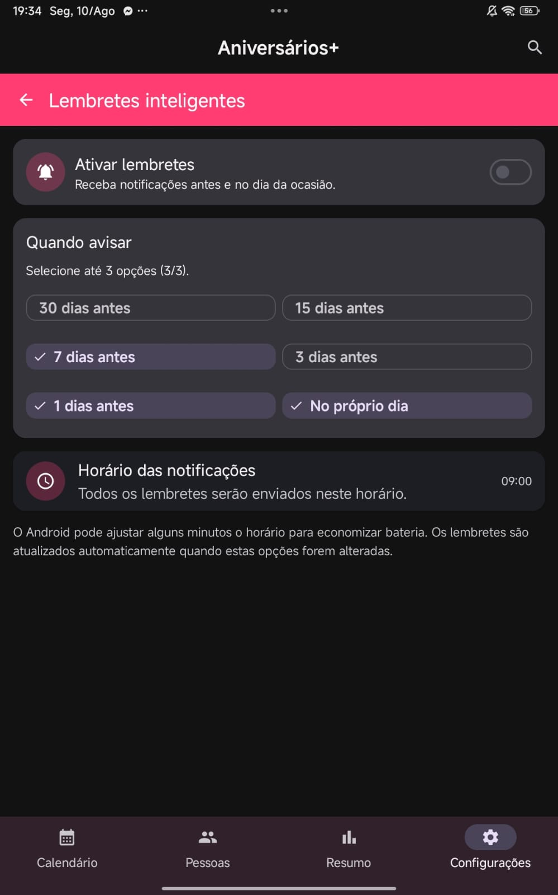
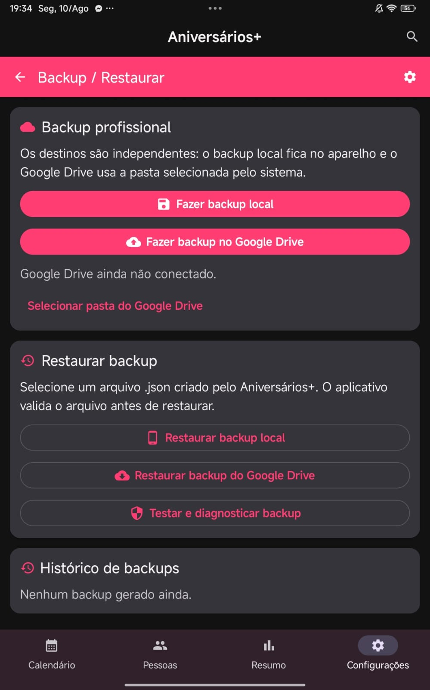
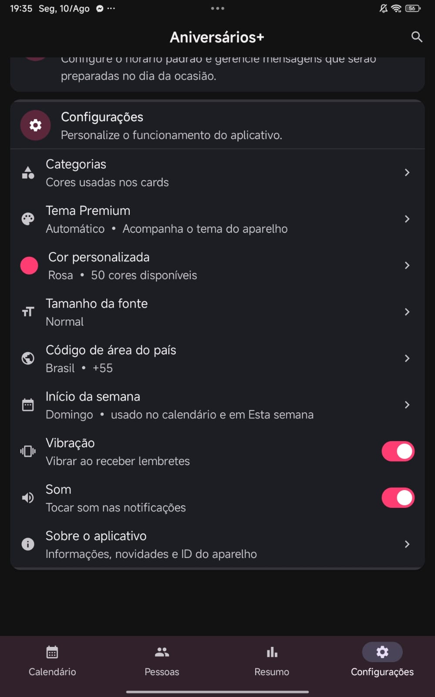
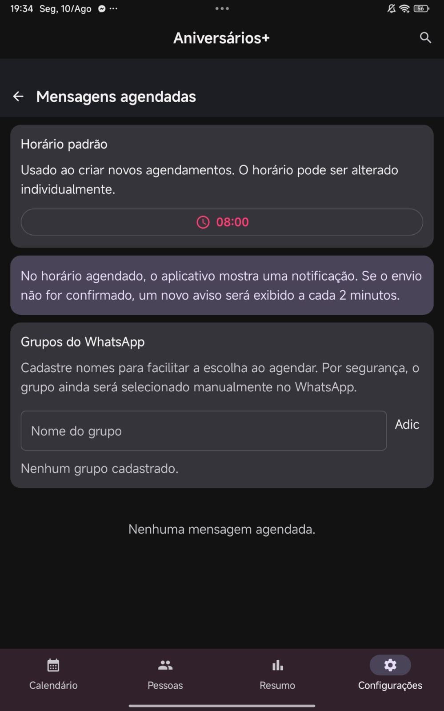

Luiz Gustavo Pinto
Aniversários+
Organize datas especiais, lembretes e mensagens para não deixar nenhum momento importante passar.
A+
Aplicativo Android
Aniversários+
Um organizador completo para aniversários, casamentos, datas comemorativas e outras ocasiões importantes, com calendário, lembretes inteligentes, mensagens e backup.
Calendário de ocasiões
Lembretes inteligentes
Mensagens agendadas
Backup e restauração
Datas importantes sempre à vistaVeja aniversários e outras ocasiões por mês, semana ou dia.
Lembretes do seu jeitoEscolha quando deseja ser avisado e personalize horários e notificações.
Organização com segurançaFaça backup local ou no Google Drive e restaure seus dados quando precisar.
Principais recursos
- ✓ Cadastro de aniversários e ocasiões
- ✓ Categorias personalizadas com cores
- ✓ Calendário mensal e visão da semana
- ✓ Lembretes inteligentes
- ✓ Mensagens agendadas
- ✓ Importação de contatos e agenda
- ✓ Importação por CSV
- ✓ Backup local e Google Drive
- ✓ Resumo com estatísticas
- ✓ Tema, cores e tamanho de fonte
Privacidade do Aniversários+
O Aniversários+ possui uma política de privacidade própria, separada da política geral do site.
Ver Política de Privacidade do Aniversários+ →Conheça o aplicativo








